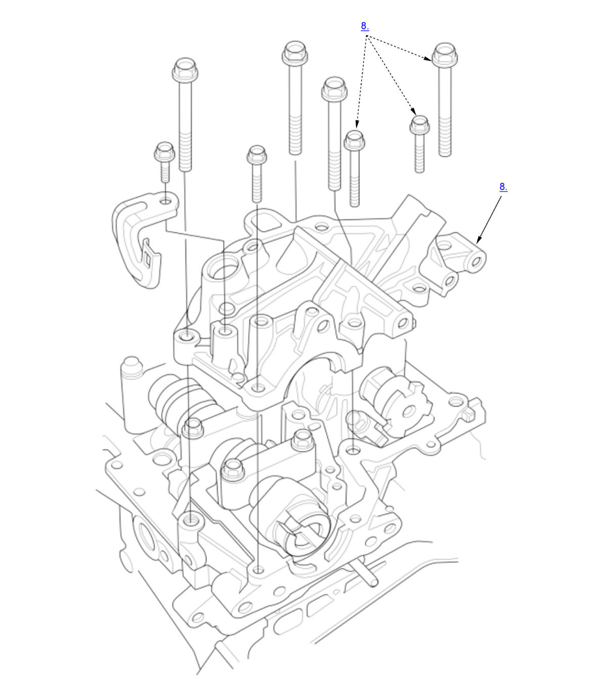
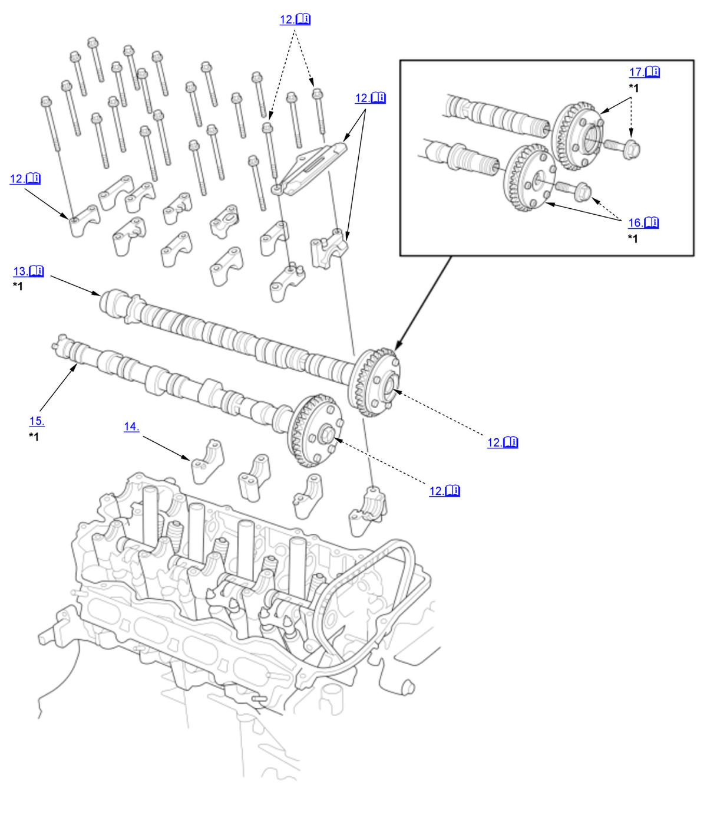

Camshaft and VTC Actuator Removal, Installation, and Inspection (K20C1) (2017 2018 2019 2020 2021): Removal: Procedure
NOTE:
Numbered call-outs in figure pertain to list numbers in following procedure.

Courtesy of HONDA, U.S.A., INC.
NOTE:
Numbered call-outs in figure pertain to list numbers in following procedure.

Courtesy of HONDA, U.S.A., INC. |
Detailed information, notes, and precautions |
| *1 | These parts have inspection items. |
- Fuel Pressure - Relieve
- Air Cleaner - Remove
- Air Flow Tube A - Remove
- High Pressure Fuel Pump - Remove
- Vacuum Pump Holder - Remove
- Cylinder Head Cover - Remove
- CMP Sensor A and CMP Sensor B - Remove
- High Pressure Fuel Pump Base - Remove
- No. 1 Piston at Top Dead Center - Set
- Cam Chain Auto-Tensioner - Remove
- Adjusting Screw - Loosen
- Cam Chain Guide B, Intake Camshaft Holder, and Upper Exhaust Camshaft Holder - Remove
NOTE: If remove VTC actuator A/B, do step 1 and/or 2. 1. Hold the intake camshaft with an open-end wrench, then loosen the VTC actuator A mounting bolt.
2. Hold the exhaust camshaft with an open-end wrench, then loosen the VTC actuator B mounting bolt. 3. Remove the camshaft holder bolts. To prevent damaging the camshafts, loosen the bolts, in sequence, two turns at a time. - Exhaust Camshaft - Remove
NOTE: Carefully tip up the exhaust camshaft on the transmission side of the engine until there is enough slack in the chain to lift the chain off of the VTC actuator B's teeth.
- Lower Exhaust Camshaft Holder - Remove
- Intake Camshaft - Remove
- VTC Actuator A - Remove
NOTE: If remove the VTC actuator A, do this procedure.
- VTC Actuator B - Remove
NOTE: If remove the VTC actuator B, do this procedure.